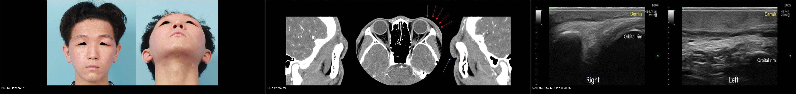
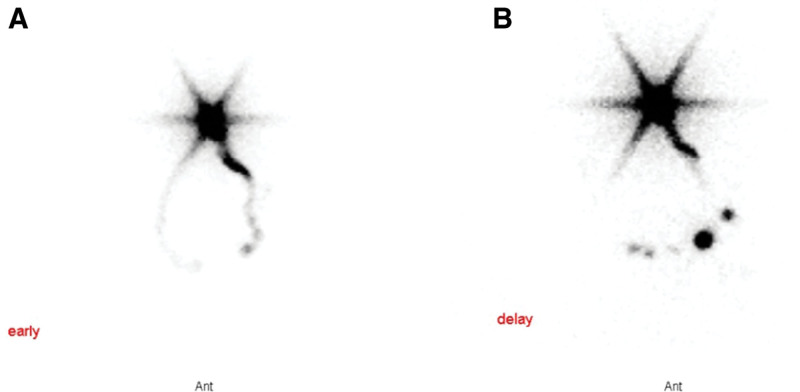
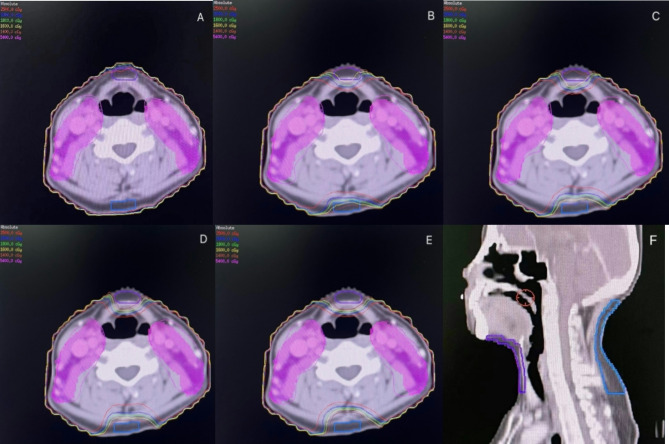
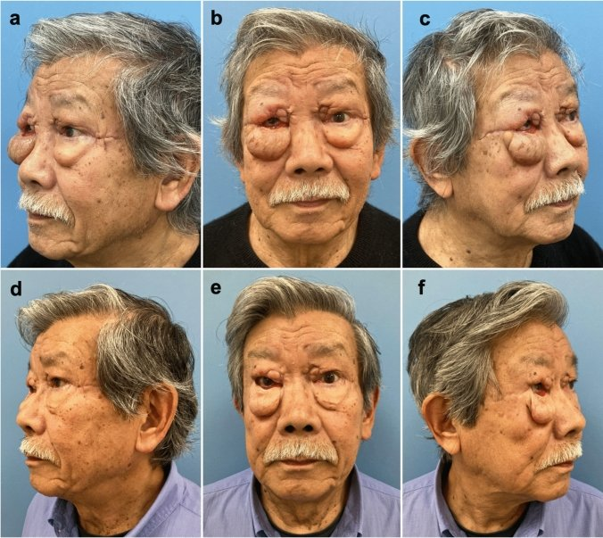
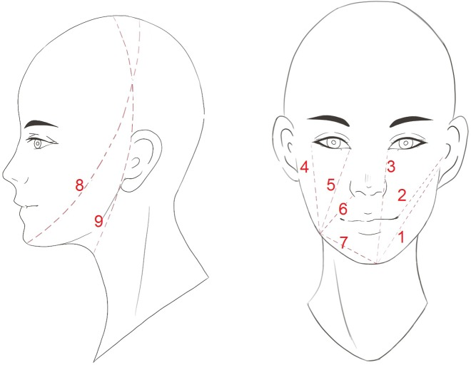
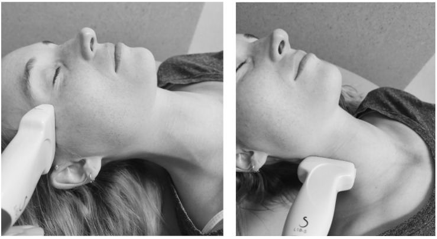

1767 — Phù bạch mạch đầu–cổ ngoài sau xạ trị / External head and neck lymphedema
Tags: pattern:phu-mo-mem pattern:phu-bach-mach pattern:day-da pattern:xo-hoa-sau-xa vung:dau-co vung:co vung:mi protocol:CT protocol:MRI protocol:sieu-am protocol:lieu-OAR score:HN-LEFG score:MDACC score:Patterson incidentaloma:khong
Mức chắc chắn (certainty): tổng hợp y văn (literature synthesis) — 1 đoàn hệ tiên lượng 76 bệnh nhân có mô hình đa biến (PMC11343725), 1 nghiên cứu đoàn hệ 87 bệnh nhân ung thư vòm họng với ngưỡng liều (PMC8422729), 1 đoàn hệ cắt ngang 59 bệnh nhân (PMC10854984), 1 RCT đa trung tâm 236 bệnh nhân (PMC12972646), 1 RCT danh sách chờ 49 bệnh nhân (PMC7767900), 1 nghiên cứu hồi cứu 34 bệnh nhân điều trị giảm phù (PMC6128036), 2 nghiên cứu độ tin cậy phép đo (PMC12110547, PMC7233552), 1 tổng quan hệ thống 4 RCT (PMC12033101), 1 loạt 6 bệnh nhân nối bạch mạch–tĩnh mạch (PMC11152802), 1 thử nghiệm lập kế hoạch xạ (PMC11973186) và 1 tổng quan hình ảnh (PMC13253071). Không có ca nguyên văn của nhóm — 3 ca trong quiz là ca dựng từ ảnh công bố, ghi nguồn từng ảnh.
Câu chốt: phù mô mềm đầu–cổ sau điều trị không phải "phù do xạ" chung chung mà là suy bơm bạch mạch (lymphatic pump failure) sau khi chuỗi hạch và mạch bạch mạch bị cắt + chiếu tia: dịch giàu protein ứ lại trong mô kẽ, rồi xơ hóa thay dần tạo phổ mềm–ấn lõm (B) → rắn–không lõm (C) → chỉ còn xơ, hết phù (D). Ba con số phải thuộc: 70% phù ngoài và 34% phù trong ở mốc 360 ngày; 29,9% phù mặt mức ≥ 2 ở ung thư vòm họng, trong đó 84,6% xuất hiện 3–6 tháng sau hóa–xạ; và liều trung bình level IV ≥ 58,7 Gy là ngưỡng dự báo phù mặt trung bình–nặng (AUC 0,726) — nghĩa là giảm liều hạch cổ là can thiệp dự phòng thật, không phải chuyện "chờ nó tự hết".
1. Tổng quan bệnh học – cơ chế hình ảnh
1.1 TẠI SAO lại phù, và tại sao phù đổi tính chất theo thời gian
- Giải phẫu – sinh lý: mỗi ngày có 2–4 lít dịch giàu protein rời mao mạch vào mô kẽ; 90% được tĩnh mạch hấp thu, 10% còn lại phải qua mạch bạch mạch về hạch. Đầu–cổ là vùng có mật độ mao mạch bạch mạch rất cao và chuỗi hạch duy nhất (level I–VII) — nên khi mổ cổ lấy hạch + chiếu tia, không có đường vòng.
- Chuỗi bệnh học (vì sao hình ảnh lại như vậy):
- Cắt hạch + xạ → đứt/quag mạch bạch mạch, hẹp xơ quanh mạch → sức cản dòng bạch mạch tăng.
- Dịch kẽ giàu protein ứ lại → áp lực keo tăng → hút thêm nước → phù mềm, ấn lõm, giảm khi kê cao/băng ép (thể B, còn gọi "phù bạch mạch thuận nghịch").
- Phù mạn → đại thực bào/lympho T xâm nhập, TGF-β hoạt hóa nguyên bào cơ → collagen I/III lắng đọng, mô mỡ bị thay → rắn, không lõm, dính (thể C = phù + xơ).
- Xơ tiến triển tiếp → hết phù nhưng da dày, đặc, giảm đàn hồi (thể D = xơ thuần túy, trùng với 1763).
- Vì sao "phù rồi xơ" là một phổ liên tục, không phải hai bệnh: cùng một trường xạ vừa phá bơm bạch mạch vừa gây xơ hóa; tỉ lệ hai thành phần quyết định thể lâm sàng. Đây là lý do bảng phân độ HN-LEFG gộp cả lymphedema và fibrosis trong một thang A–D (xem mục 4.3).
- Vì sao phù đầu–cổ khác phù chi: mô mềm mặt/cổ lỏng, nhiều mỡ, vách giải phẫu mỏng nên phù lan nhanh và thay đổi theo tư thế; nhưng thể tích nhỏ và không có băng ép chuẩn như chi → khó định lượng, dễ bị đánh giá thấp.
1.2 Vật lý hình ảnh: mỗi chuỗi "nhìn thấy" một phần của cùng một quá trình
| Chuỗi / phương tiện | Cái gì tăng/giảm | TẠI SAO (vật lý + mô bệnh) |
|---|---|---|
| CT | Dày da, dải tăng đậm độ dạng lưới trong mô dưới da, mất mặt phẳng mỡ; đậm độ dịch ~0–20 HU, không ngấm thuốc | Nước tự do trong kẽ làm mô đậm hơn mỡ (−50 đến −120 HU) nhưng thấp hơn cơ (40–60 HU); xơ làm mô đặc hơn nhưng vẫn không có khối |
| MRI T2W | Tăng tín hiệu lan tỏa mô dưới da, dày da nhẹ, dày + ngấm thuốc mạc | Nước tự do có T2 dài → sáng; mạc viêm/xơ ngấm gadolinium vì tăng thể tích kẽ và tăng tính thấm |
| MRI T1W / fat-sat | Sớm: T1 trung tính, mỡ còn; muộn: thay mỡ → T1 cao, mất tín hiệu khi fat-sat; xơ → T2 thấp | Mỡ (T1 ngắn) và collagen (T2 ngắn) là hai đầu đối lập; DIXON tách được fat fraction — định lượng mức thay mỡ |
| Siêu âm | Dày bì, lớp dưới da tăng hồi âm dạng lưới/thô, nước mô tăng (MoistureMeterD), mô mềm/ấn xẹp được | Nước tự do phản âm mạnh ở mặt phân cách → "lưới"; đầu dò tần số cao (18–24 MHz) mới đủ phân giải bì < 2 mm |
| Xạ hình bạch mạch (lymphoscintigraphy) | Chậm/mất hiện hình hạch vùng, ứ thuốc tại chỗ tiêm, dermal backflow | Đồng vị đi theo dòng chảy, không theo giải phẫu: thấy chức năng bơm chứ không thấy mô |
| ICG lymphography | Dermal backflow dạng "phun sương/sợi chỉ", mạch bạch mạch giãn ngoằn ngoèo | Huỳnh quang hồng ngoại chỉ sáng khi thuốc nằm trong lòng mạch bạch mạch; ứ ở bì = dòng bị chặn |
| Định lượng MRI | Fat fraction > 30%, fibrosis ratio > 25% = mức nặng | Hai ngưỡng này tương ứng điểm "không hồi phục" về mô học — mỡ và xơ đã thay thế mô kẽ |

Ba lớp bằng chứng của cùng một tổn thương: lâm sàng (mi trên trái dày, sa xuống), CT (mô mềm dày lan tỏa quanh hốc mắt trái, mũi tên đỏ, so với bên phải) và siêu âm 18–24 MHz (bì dày + lớp dưới da thô, nhiều vạch — "lưới"). Nguồn: Cha HG et al., Arch Plast Surg 2025 (PMC11896721), CC BY. Ảnh ghép letterbox, giữ nguyên tỉ lệ; cả ba ảnh của cùng một ca trong bài gốc.1.3 Số liệu định lượng phải thuộc
| Đại lượng | Con số | Nguồn |
|---|---|---|
| Tỉ lệ phù ngoài / trong ở mốc 360 ngày (n = 76, xạ triệt căn hoặc bổ trợ) | 70% / 34% | PMC11343725 |
| Yếu tố dự báo phù ngoài (đa biến) | Số hạch lấy bỏ + hạch tiến xa lúc chẩn đoán + level VII đối bên V30 ≥ 50% | PMC11343725 |
| Yếu tố dự báo phù trong | Thanh quản V45 ≥ 50% + hạch tiến xa; xạ bổ trợ > xạ triệt căn | PMC11343725 |
| Phù mặt grade ≥ 2 ở ung thư vòm họng sau hóa–xạ (n = 87, theo dõi trung vị 34 tháng) | 29,9% (26/87); 84,6% xuất hiện 3–6 tháng, toàn bộ trong 15 tháng; trung vị kéo dài 5,0 tháng | PMC8422729 |
| Vị trí phù mặt hay gặp nhất | Dưới cằm 92,3%, dưới hàm 76,9% | PMC8422729 |
| Ngưỡng liều dự báo phù mặt grade ≥ 2 | Level IV Dmean 58,7 Gy (AUC 0,726); level I–VII Dmean 58,6 Gy (AUC 0,720); mỗi Gy HR 1,238 và 1,384 | PMC8422729 |
| Tỉ lệ phù ở người sống > 6 tháng sau điều trị (n = 59, cắt ngang) | 94,1% (KTC 95% 0,86–0,98), trung vị nặng 9/24 — phần lớn nhẹ | PMC10854984 |
| Bảo tồn tĩnh mạch mặt + tĩnh mạch cảnh ngoài khi mổ cổ chọn lọc (n = 79) | Cắt bỏ → phù ngoài nặng hơn: OR 2,82 (1,00–8,02) | PMC13240520 |
| Vòng liều cổ trước/sau 16 Gy (n = 50, 25 có vòng) | Giảm có ý nghĩa tỉ lệ phù đầu–cổ, không giảm liều u | PMC11973186 |
| Điều trị giảm phù chuẩn (CDT, n = 34, trung vị 6 tháng) | Vòng cổ giảm ở 100% trong 1 tháng; quay cổ +30,2% (trái) / +27,9% (phải) lúc 1 tháng → +44,6% / +55,3% lúc 12 tháng; đau 4,3 → 2,0 | PMC6128036 |
| RCT đa trung tâm thiết bị ép khí (n = 236) | Triệu chứng giảm tương đương ở cả hai nhánh; thiết bị giảm phù mô mềm ngoài trên ảnh số; không khác biệt trên CT | PMC12972646 |
| RCT danh sách chờ (n = 49) | Cải thiện khả năng kiểm soát phù (p = 0,003) và phù ngoài nhìn thấy | PMC7767900 |
| Tổng quan 4 RCT (167 bệnh nhân) | Tập + dẫn lưu bạch mạch + kinesio tape/băng ép có lợi cho phù ngoài; không cải thiện phù trong | PMC12033101 |
| Nối bạch mạch–tĩnh mạch (n = 6 bệnh nhân / 8 ca mổ) | LSIDS-H&N 1,11 → 0,44 (p = 0,02); MDACC 2 → 0 hoặc 1a (p = 0,008) | PMC11152802 |
| Độ tin cậy phép đo | Vòng cổ ICC 0,958–0,994; độ dày bì ICC 0,136–0,354 (không dùng đơn độc); các phương pháp tương quan yếu với nhau | PMC12110547 |
| Sai số băng đo (n = 50 + 50) | Sw 4,6–18,3 mm; vòng cổ ICC 0,90–0,95 nhưng Sw 8,3–12,3 mm; đo điểm–điểm mặt chính xác hơn (4,6–8,8 mm) | PMC7233552 |
1.4 Hai con số "94,1%" và "70%" không mâu thuẫn
- 70% là tỉ lệ tích lũy theo thời gian ở một đoàn hệ xạ trị (bất kỳ mức độ, mốc 360 ngày).
- 94,1% là tỉ lệ hiện mắc ở một đoàn hệ cắt ngang chọn bệnh nhân sống > 6 tháng, đo bằng phép đo thể chất (nhạy hơn tự khai), với trung vị chỉ 9/24 điểm — tức rất nhiều ca nhẹ, không triệu chứng.
- Bài học: tỉ lệ phụ thuộc công cụ (đo vs tự khai), thời điểm và định nghĩa. Khi trích dẫn, luôn nói rõ mức độ nào; đừng dùng "94% bị phù" để hù bệnh nhân, và đừng dùng "chỉ 30% nặng" để bỏ theo dõi.
2. Mẫu hình + chẩn đoán phân biệt theo vị trí (Gamut)
- Cách đọc: trả lời 4 câu trước khi gọi tên: (1) phù có đúng trường xạ / bên mổ cổ không? (2) ấn lõm và giảm khi kê cao/băng ép không? (3) có khối/mass effect/lệch trục không? (4) có dấu hiệu viêm cấp (nóng, đỏ, sốt) hay tắc mạch (giãn tĩnh mạch, thở nhanh) không?
- Gamut theo vị trí (đúng thứ tự tần suất trong ung thư vòm họng: dưới cằm → dưới hàm → má → quanh hốc mắt → cổ bên → hõm trên đòn):
| Vị trí | Mẫu hình điển hình | Gamut chính |
|---|---|---|
| Dưới cằm / dưới hàm | Phù mềm, mất góc hàm, "mặt tròn" hai bên; hay gặp nhất (92,3% / 76,9%) | Phù bạch mạch · xơ hóa sau xạ · tái phát hạch Ib · áp-xe răng · hạch viêm |
| Má / vùng mang tai | Dày mô mềm lan tỏa theo trường chiếu, mất rãnh má | Phù bạch mạch · xơ hóa · viêm tuyến mang tai · tái phát u xâm lấn da |
| Quanh hốc mắt | Mi trên dày, sa mi, hẹp khe mi; có thể một bên | Phù bạch mạch sau mổ/xạ · phù do tắc tĩnh mạch · viêm mô tế bào · bệnh tuyến giáp · u hốc mắt |
| Cổ bên | Phù theo dải, mất đường viền cơ ức đòn chũm, dày da | Phù bạch mạch · xơ hóa (1763) · huyết khối tĩnh mạch cảnh · tái phát hạch · giả phình động mạch cảnh |
| Hõm trên đòn | Đầy hõm, mất lõm sinh lý, có thể hai bên | Phù bạch mạch · di căn hạch Virchow · huyết khối tĩnh mạch dưới đòn · phù do tắc tĩnh mạch chủ trên |
- Gamut theo thể mô (HN-LEFG, dùng được ngay tại giường): A = không phù nhìn thấy nhưng sờ thấy dày/căng bì; B = phù nhìn thấy, mềm, ấn lõm, giảm khi kê cao (thuần bạch mạch); C = phù nhìn thấy, rắn, không lõm, tồn tại (bạch mạch + xơ); D = da rắn, tăng mật độ, giảm đàn hồi, KHÔNG phù (xơ thuần). B, C, D được chia nhẹ / vừa / nặng.
- Gợi nhớ chống bỏ sót: "SƯNG – MỀM – RẮN – KHỐI" — Sưng đúng trường xạ, Mềm/ấn lõm = B, Rắn/không lõm = C–D, Khối/lệch trục = phải loại tái phát trước khi gọi phù.
3. Bảng so sánh phân biệt (ma trận đối chiếu)
| Thực thể (entity) | Hình ảnh điển hình (CT/MRI/US) | Chốt vào (rule-in) | Chốt loại (rule-out) | Gợi ý xác nhận |
|---|---|---|---|---|
| Phù bạch mạch ngoài (thể B) | Dày da + lưới dịch mô dưới da, T2 sáng, mạc ngấm thuốc nhẹ, mặt phẳng mỡ còn, không khối | Mềm + ấn lõm + giảm khi kê cao/băng ép + đúng trường xạ + T2 sáng | Rắn, dính, không đổi theo tư thế; có khối/lệch trục | Đo vòng cổ (ICC 0,958–0,994); siêu âm nước mô; đáp ứng với CDT |
| Xơ hóa do xạ (thể D) | Dày da, mất lớp mỡ, mô T2 thấp, ngấm thuốc đều, co kéo; không phù | Rắn, không lõm, không đổi tư thế, T2 thấp | Còn phù mềm/ấn lõm, T2 sáng | SWE (xem 1763); so phim cũ |
| Thể hỗn hợp C | Phù nền + dải xơ; T2 hỗn hợp, mạc dày | Vừa mềm vừa rắn, còn ấn lõm một phần | Thuần mềm (B) hoặc thuần rắn (D) | Theo dõi sau 4–8 tuần CDT: phần mềm giảm, phần rắn tồn tại |
| Tái phát u / di căn da (carcinoma erysipeloides) | Khối hoặc dày da dạng mảng, bờ không đều, ADC thấp, FDG dương, lớn dần | Khối/lệch trục + lớn lên trên 2 lần chụp + ADC thấp/FDG dương | Phù đối xứng, ổn định ≥ 6 tháng, không hạn chế khuếch tán | MRI + DWI; PET/CT sau ≥ 12 tuần; sinh thiết khi có khối |
| Viêm mô tế bào / áp-xe | Dày da, phù, khí trong mô, ổ dịch có vỏ | Đỏ nóng, đau, sốt, bạch cầu tăng; ổ dịch trên siêu âm | Không sốt, không đau, phù đối xứng theo trường xạ | Lâm sàng + CRP + siêu âm; chọc hút |
| Tụ dịch / lymphocele sau mổ | Ổ dịch đồng nhất, bờ rõ, sát giường mổ, không ngấm thuốc | Ổ dịch khu trú + tiền sử mổ gần đây | Phù lan tỏa không tạo ổ | Siêu âm; chọc hút dịch vàng chanh |
| Hội chứng tắc tĩnh mạch chủ trên | Phù mặt + cổ + hai tay, tuần hoàn bàng hệ, khối trung thất | Phù hai tay + giãn tĩnh mạch ngực + khối trung thất | Phù chỉ ở đầu–cổ, hai tay bình thường | CT ngực có cản quang |
| Suy giáp / phù niêm | Dày mô dưới da đối xứng, T2 trung tính, không theo trường xạ | TSH cao, phù quanh hốc mắt + da khô, tăng cân | Đúng trường xạ, TSH bình thường | TSH/FT4 |
| Phù dị ứng / phù mạch | Phù môi–lưỡi–mi, khởi phát phút–giờ | Khởi phát cấp, ngứa/mày đay, đáp ứng kháng histamin/adrenalin | Diễn tiến tuần–tháng, không ngứa | Bệnh sử; theo dõi đường thở |
| Giả phình / dò động mạch cảnh | Khối đập theo mạch, ngấm thuốc thì động mạch, có lòng giả | Khối đập + tiếng thổi + CTA có lòng giả | Phù mềm lan tỏa không có lòng mạch | CTA khẩn — red flag chảy máu |
3.1 Ba dấu hiệu dùng để "chốt" phù bạch mạch trên hình ảnh
- Tính chất theo tư thế: phù bạch mạch giảm khi kê cao ≥ 30 phút / sau băng ép, còn xơ hóa không đổi — đây là "nghiệm pháp" rẻ nhất, làm trước khi chụp.
- Hình thái phân bố: phù ôm theo trường chiếu + bên mổ cổ, không tôn trọng ranh giới giải phẫu (lan qua đường giữa nếu xạ hai bên), không có bờ khối. Tái phát lệch trục và đẩy lệch mạch/khí quản.
- Tín hiệu nước vs xơ: T2 sáng + mặt phẳng mỡ còn = còn phù (điều trị được); T2 thấp + thay mỡ + dày mạc = đã xơ (điều trị ít lợi ích hơn). Ngưỡng định lượng: fat fraction > 30% và fibrosis ratio > 25% = mức nặng.
4. Protocol chụp + hệ phân độ/điểm chuẩn hóa
4.1 Chẩn đoán hình ảnh: khi nào cần và chọn gì
- Chẩn đoán phù bạch mạch là chẩn đoán LÂM SÀNG. Hình ảnh dùng để (a) loại tái phát/biến chứng, (b) đánh giá mức xơ–mỡ, (c) lập kế hoạch can thiệp. Không chụp định kỳ chỉ để "xem phù".
- CT cổ – mặt có cản quang, lát 1–2 mm, cửa sổ mô mềm: đánh giá dày da, lưới dịch, mất mặt phẳng mỡ, hạch, mạch cảnh. Là chuỗi sẵn có trong theo dõi ung thư — đọc lại đúng cửa sổ mô mềm thay vì chỉ nhìn hạch.
- MRI (ưu tiên khi cần phân biệt xơ–phù–u): T1W, T2W fat-sat, T1W fat-sat sau tiêm, DWI + ADC, thêm DIXON để đo fat fraction. Chụp cả hai bên và trên–dưới ổ.
- Siêu âm đầu dò tần số cao 18–24 MHz: đo độ dày bì, mô tả lớp dưới da dạng lưới, đo nước mô cục bộ. Nhớ: độ dày bì có ICC chỉ 0,136–0,354 → dùng để mô tả/so sánh trong cùng người, không dùng làm tiêu chí chính.
- Xạ hình bạch mạch / ICG: dùng khi cân nhắc can thiệp vi phẫu (LVA/VLNT), không dùng để chẩn đoán thường quy.
- PET/CT: chỉ đáng tin sau ≥ 12 tuần vì viêm sau xạ dương giả.
4.2 Đo lường: chọn đúng thước
| Phép đo | Độ tin cậy | Dùng khi |
|---|---|---|
| Vòng cổ (thước dây) | ICC 0,958–0,994 — tốt nhất, nhanh nhất | Theo dõi cổ; không dùng cho vùng đầu |
| Điểm–điểm mặt (7 mốc) | Sw 4,6–8,8 mm, ICC trung bình (tragus–góc miệng 0,66) | Theo dõi mặt; luôn đo 3 lần, lấy trung bình |
| Nước mô cục bộ (MoistureMeterD) | Tốt cho vùng đầu | Khi cần định lượng vùng mặt/mi |
| Độ dày bì trên siêu âm | ICC 0,136–0,354 | Chỉ mô tả; không dùng đơn độc |
| Ảnh số / 3D | Đang phát triển | Nghiên cứu, so sánh trước–sau |
Quy tắc: mỗi lần khám đo cùng vị trí, cùng tư thế, cùng người đo nếu được, và ghi cả vòng cổ + ảnh mặt — vì các phương pháp tương quan yếu với nhau, chúng đo các khía cạnh khác nhau của phù.
4.3 Phân độ
- HN-LEFG (Head and Neck Cancer Related Lymphedema and Fibrosis Grading): thể A (không phù, sờ dày bì) · B (phù mềm, ấn lõm, giảm khi kê cao) · C (phù rắn, không lõm) · D (xơ không phù); B/C/D chia nhẹ–vừa–nặng; ghi 8 vị trí (mi, má, cổ, hõm trên đòn hai bên + dưới cằm).
- MDACC HNL rating scale: 0 / 1a / 1b / 2 / 3; trong nghiên cứu, ≥ 2 = trung bình–nặng, được coi là khó hồi phục và giảm chất lượng sống — đây là ngưỡng dùng để chỉ định điều trị tích cực.
- Modified Patterson Scale (phù TRONG, nội soi): 0 bình thường · 1 nhẹ · 2 vừa · 3 nặng cho từng cấu trúc (khoang miệng, hầu, thanh quản). Phù ngoài và phù trong là hai bài toán khác nhau: điều trị vật lý có lợi cho phù ngoài nhưng không cải thiện phù trong.
4.4 Dự phòng bằng liều: phần "can thiệp được" của bài
- Ngưỡng liều (ung thư vòm họng): giữ Dmean level IV < 58,7 Gy và Dmean level I–VII < 58,6 Gy; mỗi Gy tăng thêm → HR 1,238 / 1,384 cho phù mặt ≥ 2.
- Level VII đối bên V30 ≥ 50% là yếu tố dự báo phù ngoài độc lập (PMC11343725) → khi lập kế hoạch, để ý vùng họng sau đối bên, không chỉ level II–IV.
- Thanh quản V45 ≥ 50% dự báo phù trong → nếu bệnh nhân đã có khó nuốt, đây là ràng buộc cần cân nhắc.
- Vòng liều cổ trước/sau 16 Gy (n = 50) giảm phù mà không giảm liều u — biện pháp kỹ thuật đơn giản, có thể thử trên kế hoạch IMRT.
- Mổ cổ: bảo tồn tĩnh mạch mặt + tĩnh mạch cảnh ngoài giảm phù ngoài (OR 2,82 nếu cắt bỏ) → phối hợp với phẫu thuật viên ngay từ đầu.
flowchart TD
A[Sưng mô mềm đầu–cổ sau điều trị ung thư] --> B{Có khối, lệch trục, đau đập theo mạch?}
B -->|Có| C[CTA/MRI + DWI: loại tái phát, giả phình, áp-xe]
C --> D{Có khối hoặc lòng mạch bất thường?}
D -->|Có| E[Sinh thiết có định hướng / can thiệp cấp cứu]
D -->|Không| F[Theo dõi 4–8 tuần + điều trị giảm phù]
B -->|Không| G{Ấn lõm và giảm khi kê cao/băng ép?}
G -->|Có| H[Thể B: phù bạch mạch — CDT + tự chăm sóc]
G -->|Không| I{T2 sáng hay T2 thấp?}
I -->|T2 sáng| J[Thể C: phù + xơ — CDT có điều chỉnh + theo dõi]
I -->|T2 thấp, thay mỡ| K[Thể D: xơ hóa — vật lý trị liệu, không chờ hết phù]
H --> L{Grade ≥ 2 hoặc hạn chế chức năng?}
L -->|Có| M[Cân nhắc thiết bị ép khí, PBM, LVA nếu thất bại]
L -->|Không| N[Tự chăm sóc + khám 3 tháng]
5. Biến thể bình thường và cạm bẫy
- Phù đỉnh 3–6 tháng rồi giảm: 84,6% ca phù mặt ≥ 2 xuất hiện 3–6 tháng sau hóa–xạ, trung vị kéo dài 5 tháng, 18/26 ca tự hồi phục trong 6 tháng với điều trị bảo tồn (PMC8422729). → Đừng hứa "sẽ hết" và cũng đừng can thiệp mổ sớm.
- Bất đối xứng là bình thường: trường xạ và mổ cổ thường một bên; phù nhiều hơn bên xạ/mổ không phải tái phát. Phù hai bên gợi ý xạ hai bên hoặc nguyên nhân toàn thân (tắc tĩnh mạch, suy giáp, thận).
- Đừng dùng "độ dày da" làm chỉ số chính: ICC 0,136–0,354 (PMC12110547); sai số băng đo tới 18,3 mm (PMC7233552). Một lần đo không đủ để nói tiến triển.
- Vòng cổ chỉ đo được cổ: vùng mặt/mi cần nước mô hoặc ảnh chuẩn hóa; đừng suy ra phù mặt từ vòng cổ.
- Tăng cân do corticoid: bệnh nhân xạ đầu–cổ thường dùng corticoid → mặt tròn do Cushing, không phải phù; hỏi cân nặng và nhìn mặt nề + thân + chi.
- Sai lầm "đã thấy phù rồi ngừng tìm hạch": satisfaction of search — vẫn phải đọc toàn bộ chuỗi hạch theo 750, vì phù có thể che hạch nhỏ.
- Không sinh thiết mô xạ không có khối: mô xạ liền sẹo kém, dễ hoại tử, và lấy mẫu sai vì xơ xen kẽ u. Sinh thiết chỉ khi có khối/lệch trục/ADC thấp.
- Ba "red flag" phải dừng lại: (1) khối đập theo mạch hoặc có tiếng thổi → giả phình/dò cảnh; (2) phù tăng nhanh + đau + sốt → nhiễm trùng/áp-xe; (3) phù mặt + hai tay + giãn tĩnh mạch ngực → tắc tĩnh mạch chủ trên.
6. Tự lượng giá — Blind Quiz ngay trên trang tĩnh
Ca 1 — Nữ 24 tuổi, sau mổ + xạ vùng thái dương–mi trái, 8 tháng: mi trên trái nặng, sa xuống, không đau. Ba ảnh dưới là lâm sàng, CT và siêu âm của cùng bệnh nhân.
- Gợi ý lâm sàng: không sốt, không đỏ, phù mềm, giảm khi nằm đầu cao.
- Câu hỏi: Dấu hiệu chính trên CT và siêu âm? Ba chẩn đoán phân biệt? Dấu hiệu nào loại u/tái phát?
Bấm để hiện đáp án (findings + chẩn đoán)
- Dấu hiệu: mô mềm quanh hốc mắt trái dày lan tỏa (mũi tên đỏ), không khối, không xâm lấn cơ; siêu âm: bì dày + lớp dưới da thô nhiều vạch ở bên trái so với bên phải.
- Chẩn đoán: phù bạch mạch ngoài quanh hốc mắt sau mổ + xạ, thể B.
- Vì sao: tắc dòng bạch mạch → nước tự do trong bì/dưới da → T2 sáng, siêu âm "lưới"; không có khối và không hạn chế khuếch tán là chốt loại tái phát.
- Nguồn ảnh: Cha HG, Hyun DY, Park ES, Choi CY, Nam SM, Arch Plast Surg 2025 (PMC11896721), CC BY.
Ca 2 — Nam 55 tuổi, ung thư hạ họng–hầu đã mổ + hóa–xạ, 5 tháng sau xạ: sưng nửa mặt phải. Xạ hình bạch mạch dưới đây.

- Câu hỏi: Ảnh A (sớm) và B (muộn) khác nhau ở đâu? Vì sao hạch dưới hàm/dưới cằm phải không hiện hình? Đây là bằng chứng của cơ chế gì?
Bấm để hiện đáp án (findings + chẩn đoán)
- Dấu hiệu: A — thuốc ở chỗ tiêm và một ít mạch, nhưng không thấy hạch dưới hàm/dưới cằm phải; B (muộn) — thuốc ứ tại chỗ, chỉ hiện vài hạch nhỏ, không có chuỗi dẫn lưu bình thường.
- Chẩn đoán: phù bạch mạch ngoài do tắc dẫn lưu sau mổ cổ + xạ.
- Vì sao: xạ hình đo chức năng bơm, không đo giải phẫu — chỗ tắc hiện ứ thuốc, hạch hạ lưu không hiện hình. Đây là bằng chứng trực tiếp của "suy bơm bạch mạch", không phải phù do tim/thận.
- Nguồn ảnh: Lin YS, Liu CJ, Chou CH, Plast Reconstr Surg Glob Open 2024 (PMC11152802), CC BY-NC-ND — ảnh nguyên bản, không cắt/ghép.
Ca 3 — Nữ 52 tuổi, ung thư vòm họng T2N1, hóa–xạ đồng thời; 5 tháng sau: mặt dưới cằm–dưới hàm hai bên to, mềm, ấn lõm, không sốt. Bản đồ liều cho thấy vùng cổ trước/sau nhận liều cao.

- Câu hỏi: Vì sao phù lại ở dưới cằm/dưới hàm chứ không phải nơi khác? Ngưỡng liều nào liên quan? Có cách giảm phù mà không giảm liều u không?
Bấm để hiện đáp án (findings + chẩn đoán)
- Dấu hiệu: vùng cổ trước/sau nằm trong vòng liều (A–E); đây là nơi tập trung mạch bạch mạch nông và chuỗi hạch level VI/VII, dẫn lưu cho dưới cằm–dưới hàm.
- Chẩn đoán: phù bạch mạch ngoài thể B sau hóa–xạ; vị trí dưới cằm 92,3% / dưới hàm 76,9% là phù hợp y văn.
- Ngưỡng: Dmean level IV 58,7 Gy và level I–VII 58,6 Gy dự báo phù mặt ≥ 2; level VII đối bên V30 ≥ 50% cũng là yếu tố nguy cơ.
- Can thiệp: đặt vòng liều 16 Gy ở cổ trước/sau giảm phù mà không giảm liều u (n = 50) → thảo luận với bác sĩ xạ trị ngay từ lần lập kế hoạch, không chờ phù xuất hiện.
- Nguồn ảnh: Liao K, Tian Y, Li H, Zheng R, Sci Rep 2025 (PMC11973186), CC BY-NC-ND — ảnh nguyên bản, không cắt/ghép.

Phù mi hai bên (a–c) trước và 3 tháng sau nối bạch mạch–tĩnh mạch có hỗ trợ robot (d–f): mi xẹp, khe mi mở, chức năng cải thiện. Nguồn: Imholz C et al., J Robot Surg 2025 (PMC12255657), CC BY. Đây là ca phù mi tiên phát, không phải sau xạ — dùng minh họa nguyên lý "dẫn lưu lại thì phù giảm", không gán cho bệnh nhân xạ.
Bảy mốc điểm–điểm vùng mặt (1–7) và hai vòng (8–9) dùng trong nghiên cứu độ tin cậy; vòng cổ (không vẽ trong hình) có ICC tốt nhất (0,90–0,95) nhưng sai số tới 12,3 mm, còn đo mặt chính xác hơn nhưng ICC chỉ trung bình. Nguồn: Chotipanich A, Kongpit N, PLoS One 2020 (PMC7233552), CC BY.
Hai tư thế đặt đầu dò: L18–5 ở cổ và L10–2 ở vùng đầu — phải cố định tư thế và vị trí, vì độ dày bì có ICC chỉ 0,136–0,354. Nguồn: Van Aperen K et al., Cancers 2025 (PMC12110547), CC BY.Bài liên quan chéo
- 700 – Tổng quan Đầu Mặt Cổ
- 1763 – Xơ hóa mô mềm cổ sau xạ (thể D của cùng phổ; phân biệt bằng ấn lõm và T2)
- 1761 – Trismus sau xạ trị đầu cổ (cùng trường xạ, cùng cơ chế xơ hóa cơ nhai)
- 1764 – Bệnh thần kinh V3 sau xạ trị đầu cổ (teo cơ do mất thần kinh, không phải phù)
- 1684 – Nuốt khó sau xạ trị đầu cổ (phù trong — Modified Patterson)
- 750 – Hạch cổ & NI-RADS (phân tầng hạch sau điều trị)
Ảnh
- 7 ảnh + 1 ảnh ghép; nguồn và giấy phép từng ảnh trong
images/CREDITS.md. 1767_bach-mach-XQ_PMC11152802.jpg,1767_vong-lieu-co_CT_PMC11973186.jpglà CC BY-NC-ND → dùng nguyên bản, không crop, không ghép.1767_phu-mi_LVA_PMC12255657.jpglà ca phù mi tiên phát (không sau xạ) và1767_phu-mi_*_PMC11896721.jpglà ca phù mi sau mổ + xạ vùng thái dương — bài ghi rõ trong chú thích, không gán sai bối cảnh.- Không tìm được ảnh open-access chụp đúng thang HN-LEFG A–D trên cổ → bài không bịa ảnh, dùng ảnh minh họa từng cơ chế và ghi rõ nguồn.
Không dùng để chẩn đoán độc lập khi chưa có người hướng dẫn.